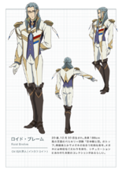
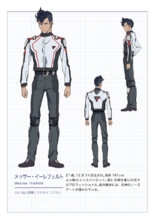

我比较喜欢的动漫 ————超时空要塞Δ
公元2067年，以银河系边境的星系为中心，丧失自我而狂暴化、极尽破坏之能事的“Var”症候群，正在逐渐扩大。察觉事态严重性的星间复合企业体，为了将这一症状镇静化，将少女们的“战术音乐组合Walküre”与执行共同作战的“Valkyrie部队”编成到一起。 另一方面，“风之王国”的被称作“空中骑士团”的“谜之Valkyrie部队”开始行动。在“原始文明的遗产”之谜的交错当中，超越星系的热切恋情与友情的物语开幕。
VF-31 Siegfried（ジークフリード） 与“战术音乐组合Walküre”执行共同作战的Δ小队所运用的最新锐机体。疾风·伊梅尔曼的搭乘机。
VF-31C Siegfried（ジークフリード） 与“战术音乐组合Walküre”执行共同作战的Δ小队所运用的最新锐机体。米拉吉·法莉娜·吉纳斯的搭乘机。
VF-31E Siegfried（ジークフリード） 与“战术音乐组合Walküre”执行共同作战的Δ小队所运用的最新锐机体。查克·马斯坦格的搭乘机
VF-31F Siegfried（ジークフリード） 与“战术音乐组合Walküre”执行共同作战的Δ小队所运用的最新锐机体。梅瑟·伊勒费尔德的搭乘机
VF-31S Siegfried（ジークフリード） 与“战术音乐组合Walküre”执行共同作战的Δ小队所运用的最新锐机体。阿拉德·梅塔斯的搭乘机。
VF-171 NightmarePlus（ナイトメアプラス） 公元2067年，在银河边境宙域新统合军主要运用的机体。
Sv-262HsDoraken III（ドラケンⅢ） 在银河边境的星系的“风之王国”的“空中骑士团”驾驶，谜之可变战斗机。吉斯·阿耶罗·温德米尔的搭乘机。

Sv-262BaDoraken III（ドラケンⅢ） 在银河边境的星系的“风之王国”的“空中骑士团”驾驶，谜之可变战斗机。博格·康瓦尔特的搭乘机
芙蕾雅·薇恩（フレイア·ヴィオン） 配音：铃木实里 14岁，11月3日生。身高154cm。 憧憬着战术音乐组合“Walküre”，而从银河边境的乡下飞奔而出的女孩子。喜欢故乡名产的苹果以及歌唱，口癖是“Gorigori”。不喜欢银河鲭。
美云·吉努梅尔（美云·ギンヌメール） 配音：小清水亚美 身高165cm。 战术音乐组合“Walküre”的头号主唱。品性、经历、私人状况全部被谜团包围的神秘存在。她那具有令“‘Var’症候群”镇静化效果的歌声是Chaos的王牌。
要·巴卡妮雅（カナメ·バッカニア） 配音：安野希世乃 22岁，6月8日生。身高168cm。 战术音乐组合“Walküre”的队长。以时间管理和战前准备为首，负责队伍管理的可靠大姐姐。以前有过以偶像身份出道的经历。
玛基娜·中岛（マキナ·中岛） 配音：西田望见 18岁，4月19日生。身高159cm。 战术音乐组合“Walküre”的成员，有着轻飘飘风貌的女孩子。同时担当机械师。会给自己中意的机械起名并疼爱着它。与同为Walküre成员的玲奈如同姐妹般亲密，住在同一屋檐下。
蕾娜·普劳拉（レイナ·フラウラー） 配音：东山奈央 15岁，7月23日生。身高147cm。 战术音乐组合“Walküre”的成员。沉默寡言，很少展露出表情。也有着干练黑客的一面，同时担当电子控制。与同为Walküre成员的牧奈关系亲密。
吉斯·阿耶罗·温德米尔（キース・エアロ・ウィンダミア） 配音：木村良平 19岁，2月25日生。身高179cm。 风之王国的Valkyrie部队“空中骑士团”所属，贯彻骑士道精神的孤高的王牌飞行员。是国王侧室之子。
罗伊德·布雷姆（ロイド・ブレーム） 配音：石川界人 20岁，12月30日生。身高186cm。 风之王国的Valkyrie部队“空中骑士团”的指挥官。待人温和、和眼镜很相配的知性青年。似乎对眼镜有着特别的执着，拥有不少适合各种场合的藏品。
提奥·约兹拉（テオ・ユッシラ） 配音：峰岸佳 16岁，11月21日生。身高171cm。 风之王国的Valkyrie部队“空中骑士团”的飞行员。双胞胎弟弟扎奥同样身处空中骑士团。商家出身。
扎奥·约兹拉（ザオ・ユッシラ） 配音：峰岸佳 16岁，11月21日生。身高171cm。 风之王国的Valkyrie部队“空中骑士团”的飞行员。和双胞胎哥哥提奥相比更加好战。
博格·康瓦尔特（ボーグ・コンファールト） 配音：KENN 15岁，4月7日生。身高174cm。 风之王国的Valkyrie部队“空中骑士团”的飞行员。淘气的老幺，在5位姐姐的包围下长大。改不掉训练时代的习惯，仍然称呼教官海尔曼为“老板”，经常因此被提醒。
疾风·伊梅尔曼（ハヤテ・インメルマン） 配音：内田雄马 17岁，9月21日生。身高169cm。 有话直说、稍显粗鲁的少年。天生有节奏感，但本人对此无自觉。没有找到具体的梦想或是目标，辗转来往于银河当中。胸口的挂坠是父亲的遗物。实际上对猫过敏。
米拉吉·法莉娜·吉纳斯（ミラージュ・ファリーナ・ジーナス） 配音：濑户麻沙美 18岁，2月11日生。身高164.5cm。 Δ小队唯一的女性成员。在对于飞行员的职务感到自豪的同时，也有因认真而不知变通的一面。也许是受其性格影响，对恋爱的事很不成熟。在新统合军任飞行员时被阿拉德队长选中，并加入Chaos。
查克·马斯坦格（チャック・マスタング） 配音：川田绅司 24岁，8月28日生。身高173cm。 拉格纳行星出身，Δ小队的气氛制造者。对女性的态度轻浮，然而却没人会回应他。与4个弟弟妹妹一起经营着名为“裸食娘娘”的饮食店。
梅瑟·伊勒费尔德（メッサー・イーレフェルト） 配音：内山昂辉 21岁，12月14日生。身高191cm。 Δ小队的王牌飞行员。经常沉着冷静地应对事务的专家。他的机体上画着死神的机头涂鸦。
阿拉德·梅塔斯（アラド・メルダース） 配音：森川智之 33岁，1月10日生。身高182cm。 包容力与严格并存的Δ小队队长，可靠的大哥。与Walküre共同执行任务的人选被全权委托给他，于是集结了一批虽然很有本事但个性古怪的飞行员们。曾经属于新统合军。
欧内斯特·约翰逊（アーネスト・ジョンソン） 配音：石冢运升 40来岁，4月1日生。身高227cm。 杰特拉帝和地球人的混血，身材魁梧，Chaos拉格纳支部Macross级战舰艾利西翁的舰长。同时也是格斗技教官。
凯厄斯（ケイオス） 根据折跃波通信/情报，以及折跃航法事业的投资为起点，在这十年左右规模急速扩大，拥有情报・演艺部门的战术音乐组合“Walküre”，和参与共同任务的Δ小队的星际复合企业。疾风等人所属的拉格纳支部，把Macross・Elysion作为母舰。
Δ小队 凯厄斯拉格纳第三战斗航空团所属的可变战斗机小队。于Walküre共同执行任务。护卫不用说，搭乘特别规格的机体“VF31齐格菲”后，歌声的效果增强。队长由阿拉德担任。
Walküre（ワルキューレ） 凯厄斯的情报・演艺部门所属的战术音乐组合。其成员，由持有折跃因子受容体的高数值的少女们组成。她们的歌声在镇压瓦尔综合症中发挥着效果，在发病前的阶段也发挥着预防效果。组成时，“FIRE BOMBER”、“干扰之鸟”、“雪莉·诺姆”、“兰花·李”等，根据至今为止的歌曲的折跃效应研究成果也有被反映。在温德米尔宣战公布后，为了对抗“风之歌”的心理控制，潜入作战等也在进行中。
海猫（ウミネコ） 就像海豹和猫合在一起的水陆两生的生物。喜欢吃鱼的杂食动物，鱼鳍的一击非常强烈。与拉格纳人长期共生，作为退治害兽的动物，十分重要。作为地球人的宠物，人气也很高。拉格纳有“捉弄海猫，婚期会变晚”的传说。
温德米尔王国（ウィンダミア王国） 银河边境的布里希嘉曼球状星团，行星温德米尔Ⅳ作为主星的独立小国家。维持着与地球曾经的欧洲中世纪的王政类似的国家体制。寒冷的气候为特征，1年有大半是被雪覆盖着的。从七年前的第一次独立战争事实上的停战以来，联合政府一直对其实施经济封锁。
温德米尔人（ウィンダミア人） 与人类酷似的种族，有着强韧的肉体与强大的生物能力。那个能力，超过了マイクローン化的天顶星人。但是其代价为生长期短，比较短命，平均寿命为30~35岁程度。到了晚年就像不太老化的植物枯萎般皮肤出现裂痕，并腐朽下去。头部有着名为“Rune”的特有感觉器官。
Rune（ルン） 温德米尔人特有的感觉器官。振动和感觉，能感知折跃波等反应，支持着他们的强大的生物能力。协调脑电波，尖端部分会对大致地感情放出协调的光。男性有两条，女性为一条。男性的尖端部分为星型和笔直型，女性的尖端部分一般为心型和水滴型，不过个人差别也很大。神经集中的尖端部非常敏感。
空中骑士团（空中骑士団） 温德米尔王国的可变战斗机部队。操纵最新锐的隐形战斗攻击机“Sv-262魔龙Ⅲ”。统率全体的是圣骑士团长罗伊德·布雷姆。近卫骑士之一的吉斯·阿耶罗·温德米尔率领的白骑士小队，运用的是6机编队。
风之歌手（风の歌い手） 温德米尔继承下来的传统之一。风之歌手，根据其歌声，使风和大地与心相通。一般多为王家的血统，罕见的列外也有。
银河苹果（温德米尔苹果）（银河リンゴ（ウィンダミアアップル）） 温德米尔特产的水果。与地球的苹果很相似，味道和口感几乎一样，富含钾、钙、维生素B群等，作为简便又美味的宇宙食品，人气也很高，被广泛地出口。无论是煮还是烤都很美味。
布里希嘉曼球状星团（ブリージンガル球状星団） 位于银河系射手座涡状肢的前端附近的球状星团。直径大概为1000光年，以拉格纳、阿尔·沙哈尔和温德米尔为代表的可居住行星也很多。除了周围散步着普罗多文明的遗迹以外，在各自的星球里还住着原住民。另外，温德米尔星系的周围已经被确认有着巨大的次元断层，很难自由来往
伊普西龙财团（イプシロン财団） 在银河中展开事业的巨大财阀。其旗下有着各种各样的构成团体，涉及兵器的研究开发和贩卖、农作物和医疗品的贸易等多方面。温德米尔现政权的最大援助者，贝尔加·史东担任布里希嘉曼球状星团的负责人。
不丹扎尔·罗姆・马杨（ルダンジャール・ロム・マヤン） 温德米尔皇家代代相传的神圣言词，“以真正的王者之名”的意思。
原始文明（プロトカルチャー） 在银河中被认为是最初的智慧生命体的先史文明。以高度的文明极尽荣华，自己诞生的战斗种族天顶星和原始恶魔被毁灭。布里希嘉曼球状星团，原始文明最后的末裔逃出并延伸开来的痕迹，可以作为遗迹四处确认。
次元兵器（じげんへいき） 将时空扭曲破坏，有着绝大威力的大范围破坏兵器。虽然统合政府被禁止使用，但8年前银河舰队上层部在加利亚4行星使用过，另外，7年前的温德米尔第一次独立战争末期，被认为是温德米尔方面使用。
反应弹（はんのうだん） 在雷管里使用重量子，因热核反应而产生巨大破坏力的兵器。根据第一次星际大战后缔结的银河条约，在使用上被限制着。
天顶星人（ゼントラーディ） 原始文明于战争用而诞生的巨人族。身高超过10米，根据マイクローン装置，也有可能有着与人类相同大小。但是，マイクローン化也有风险，过度使用会无法回到原样，也有可能会变成幼儿体型化。
瓦尔症候群（ヴァール症候群） 人类突然丧失自我而凶暴化的奇病。发病时会肌肉膨胀，身体能力提高。但是，眼睛会变红并失去理智。已确认在银河全域发病，对策亟待提出。机制不能完全被解明，但已确认Walküre的歌曲对其有效。
折跃波（フォールド波） 在高次元空间发生的如波动般的东西。超越时空比光传播更快。Walküre成员的歌声含有折跃波成分，对瓦尔症候群也起效果。别名为フォールド・ウェーブ（FOLD WAVE）。
卡莱尔的黑色风暴（カーライルの黒い岚） 温德米尔第一次独立战争的末期，使用了应被禁止的次元武器，被投放到同国的卡莱尔地区，平民和驻留的新统合军遭受到了巨大的损害。以这个惨剧为契机，新统合军从温德米尔撤退。独立战争迎来了实际上的停战状态。
折跃因子受容体（フォールドレセプター） 沉静化瓦尔症候群，或者可以认为是促进的关键的特别的因子受容体。具有折跃因子受容体的Walküre成员的歌声里含有折跃波成分，能干涉与生物共生的折跃细菌。多称呼为“FoldReceptor“的略称。